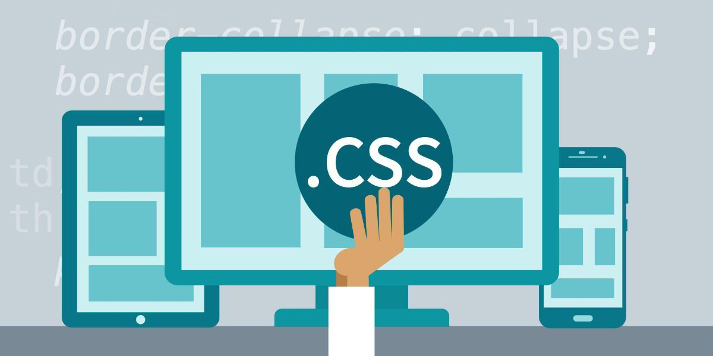

CSS (Cascading Style Sheets, каскадные таблицы стилей) — язык описания внешнего вида HTML-документа. Это одна из базовых технологий в современном интернете. Практически ни один сайт не обходится без CSS, поэтому HTML и CSS действуют в единой связке.
На языке HTML мы создаем размеченный текст — документ с гиперссылками, таблицами, маркированными списками, разными начертаниями шрифтов, заголовками, подзаголовками и так далее. Получаем «простыню» текста с таблицами и иллюстрациями. Интернет изобрели ученые, и для них такое положение вещей было приемлемым. Но все изменилось, когда WWW пошел в массы и свои странички начали создавать простые пользователи, которые хотели индивидуальности и самовыражения, а также коммерческие компании со своими корпоративными стандартами оформления. В общем, веб-страницам понадобилось индивидуальное оформление: стиль.
Больше информации тут! 